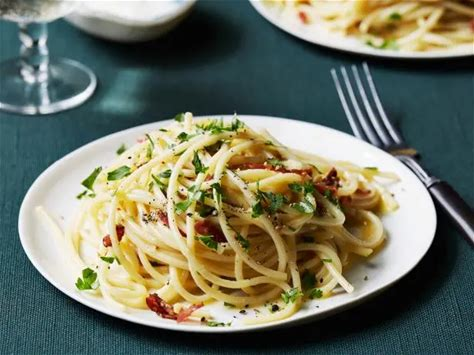

Pasta Carbonara

Ingredients
- Guanciale – This is a key ingredient in carbonara, and is a cured fatty pork that is similar to bacon and pancetta. It adds adds flavour into the dish and the fat makes the sauce creamy when mixed with the egg and starchy pasta cooking water.
- Parmigiano reggiano – This is basically a premium parmesan that’s been aged so it has more complex flavours. It adds salt into the sauce as well as thickening it. Pecorino romano, which is made from sheep milk, is also commonly used, or a combination of the two. Substitute with parmesan cheese.
- Egg yolks and whole eggs – The egg combined with the guanciale fat is what makes the stunning creamy carbonara sauce that the world is obsessed with. There’s no need for cream for a creamy sauce! See section above for why.
- Spaghetti – While you can use any long pasta, the most common type used is spaghetti.
- Pepper – For seasoning. Freshly ground black pepper recommended here.
- No salt in sauce – The pasta cooking water is salted so it flavours the spaghetti as it cooks. And the carbonara sauce gets salt from the guanciale and cheese.
- Garlic, optional – While not strictly traditional, garlic is a popular addition and it does add extra flavour into it.
How to prepare it
- Batons – Cut the guanciale into thick batons. Biting through the golden brown crust into meaty bits of salty guanciale is part of the awesomeness that is carbonara!
- Finely grate the parmigiana reggiano or pecorino. I use a microplane – one of can’t-live-without kitchenware items!
- Sauce – Whisk together the egg, cheese and pepper in a large bowl. It needs to be a large bowl because the pasta will be stirred into the sauce in the bowl, off the stove, to avoid scrambling the eggs.
- Cook pasta – Bring 4 litres (4 quarts) of water to the boil with 1 tablespoon of salt. Cook the pasta per packet directions. It should be firm, not soft, but fully cooked through.
- Reserve pasta cooking water – Just before draining, scoop out one cup of pasta cooking water. Then drain the pasta in a colander.
- Cook guanciale until golden while the pasta is cooking. You don’t need any oil, the guanciale will fry in its own fat.
- Toss pasta in guanciale – Tumble the hot pasta into the pan with the guanciale then toss so the pasta gets coated in the guanciale fat
- Transfer into sauce bowl – Tip the hot pasta into the bowl with the egg and use a rubber spatula to scrape out every drop of the guanciale fat into the bowl. That stuff is gold!
- Add 1/2 cup pasta cooking water into the bowl.
- Mix vigorously with the handle of a wooden spoon, spinning the pasta around, for around 30 seconds to 1 minute. Watch as the watery pale yellow liquid magically transforms into a creamy sauce.
You know it’s ready when the sauce is no longer watery and pooled in the bottom of the bowl. Instead, it will be thickened, creamy, and clinging to the pasta!
- Serve immediately in warm bowls. Pasta waits for no one!
Warm bowls? Yes. I don’t usually warm bowls for serving food, but for pasta, I almost always do. This is because pasta is at its best when it’s freshly made with the sauce is slick and the pasta is juicy. As it cools, the sauce thickens and the pasta gets stodgy. A warm bowl prolongs the life of pasta. I just warm bowls by placing a stack in the microwave for 1 minute. Else, run it under hot water or put in a low oven.